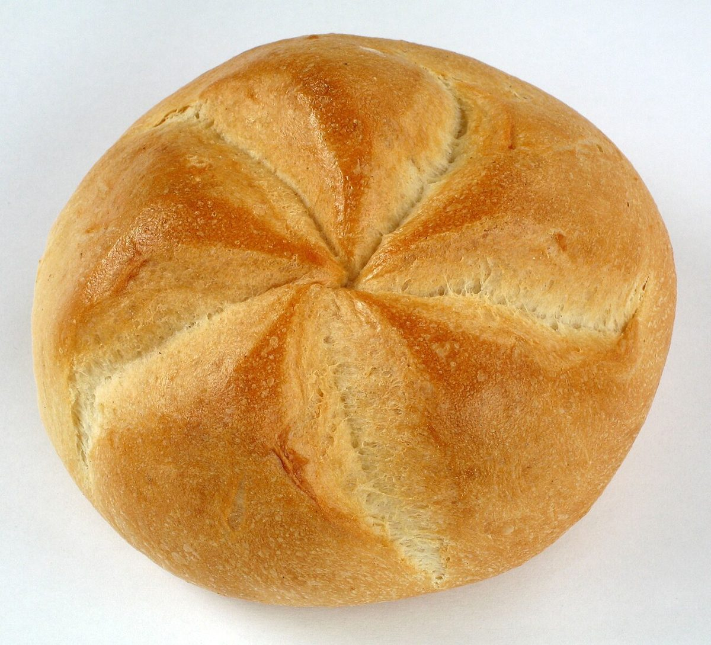

パン屋 / 愛媛県
Favori
愛媛県西条市東町にあるパン屋「Favori」のご案内ページです。営業時間やメニューなど、詳しいことは準備中。まずはInstagramをのぞいてみてください。

このサイトの見立て
Favori を、口の形で六つにたどる。
「Favori」を声に出すとき、口の形は F → a → v → o → r → i と移っていきます。このサイトでは6文字それぞれの口の形を小さな目印にして、5ページに割り当てました。FとvはFavoriの中で同じ口の形を二度使い、a・o・iの三つの母音は口の開きが「大きい→中くらい→小さい」の順に並びます。制作側の連想で、お店の理念・由来とは無関係です。口の形の説明は日本語話者向けの大まかな目安です。
- F
上の歯を下くちびるに軽く当て、息だけを通す。
- a
口を大きく開く。三つの母音でいちばん開きが大きい。
- v
Fと同じ口の形のまま、声をのせる。
- o
くちびるを丸くすぼめる。開きは中くらい。
- r
舌先をそっと動かす。
- i
口を横に引く。開きはいちばん小さい。
三つの母音の口の開き(目安)
a大きく開く
o丸くすぼめる
i横に引く
6文字を5ページに割り振るため、最後のページは「r」と「i」をひとつにまとめて「ri」としています。
パンのイメージ
白い背景のパンと豆
写真は国外または撮影地不明のフリー素材で、お店の商品ではありません。


ご案内
お店のこと(確認できたものだけ)
| 所在地 | 〒793-0026 愛媛県西条市東町271-1 |
|---|---|
| 電話 | 0897-47-8131 |
| 営業時間 | 準備中 |
| 定休日 | 準備中 |
| ご予約 | 準備中 |
| 駐車場 | 準備中 |
| @favori.saijo |